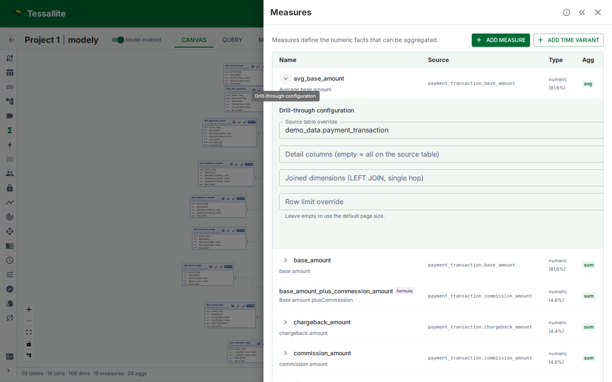

Curate drill-through
What this is
Every standard measure has a drill-through set the moment it is saved. By default the set returns the cell's grouping dimensions — the dimensions that identify the number the analyst clicked — on the underlying fact table. Curation lets the modeller change that default in four directions:
- Detail columns — narrow the column projection (hide PII, hide internal IDs, hide noise).
- Joined dimensions — add human-readable text from a dimension table that the fact stores only by surrogate key.
- Source-table override — point drill-through at a finer-grained sibling table (e.g.
order_linesinstead oforders). - Row-limit override — cap the page size at something other than the default 1 000.
This page covers each control, the validation rules that protect the analyst, and the worked examples the demo seed boots with.
Where to configure
Open the Measures drawer. Every standard measure row has an expand chevron (▸). Click it to reveal the Drill-through configuration sub-row.
Calculated measures show no chevron — drill-through on a calculated measure decomposes into one panel per referenced base measure (see Drill-through for the decomposed-drawer model).

Figure 1 — The curation editor expanded under a measure row. Empty fields fall back to the defaults documented above.
Detail columns
Pick the columns the analyst should see when they drill into a cell. The picker lists the dimension-backed columns on the source fact table; selected entries become the SELECT projection.
- Empty selection keeps the default (the cell's grouping dimensions on the source table).
- Only columns that are exposed as a dimension on the model can be projected — drill-through runs through the semantic layer, so a raw column with no dimension over it is not selectable. Curate from the dimension-backed column set the editor lists; a column with no dimension is rejected at save time with
DRILL_DETAIL_COLUMN_NOT_PROJECTABLE. - A column referenced by an active row-security rule must stay in the projection — otherwise the endpoint would have no way to filter the drilled rows. The save fails with
DRILL_DETAIL_COLUMN_OFF_TABLEif the curator removes a security column. - Columns that exist on the model but on a different table are rejected at save time, even if the override source points elsewhere — the projection list is always validated against the table that will actually be read.
Pick the columns the analyst would name themselves. Internal IDs, audit timestamps, and created_by columns rarely answer the analyst's "which rows made up this number" question; they push the useful columns off the right edge of the drawer. Tighten ruthlessly.
Joined dimensions
Fact tables often store dimensions only by surrogate key — customer_id, product_id. The drilled rows are then a wall of UUIDs. Joined dimensions fix that by LEFT JOIN-ing the dimension table back in for the drill-through query alone.
- The picker lists every dimension defined on the model. Pick the ones whose human-readable column you want surfaced.
- Each joined dimension is projected under its own dimension name (
customer_name,product_category) — the name is the dimension as defined on the model, with no automatic prefix. Give two dimensions distinct names on the model if you need both surfaced side by side. - The dimension's base table must have a direct join to the fact (
v1is single-hop). Multi-hop dimension joins are rejected withDRILL_DIMENSION_NO_JOIN. If the modeller needs a multi-hop dimension, route it through the source-table override below.
Why LEFT JOIN — drill-through must surface every fact row even when the dimension key is missing or unmatched. An INNER JOIN would silently drop those rows, masking the very data-quality issue the analyst is investigating.
Source-table override + join path
The default source for drill-through is the measure's source fact table. Override it when a finer-grained sibling carries the row-level detail the analyst wants.
The classic example: sales_amount_sum aggregates sales.amount, but the line-item detail lives in order_lines. By default a drill returns one row per sales aggregation; override the source to order_lines and the drill returns one row per line item.
When the override is set, Tessallite needs to know how the override table joins back to the fact so that grouping-level filters (the cell coordinate) still apply. The editor enumerates every join path of up to four hops between the override and the original fact, and asks the modeller to pick one.
- Single path — auto-selected, no picker needed.
- Multiple paths — the picker shows each candidate as
table1 → table2 → table3 [cardinality]. Save is rejected (DRILL_OVERRIDE_NO_JOIN_PATH) until one is chosen. - No path — an empty picker with a save-blocking error. Either the override is wrong, or a join is missing in the model.
The cardinality hint tells you whether the picked path expands rows (one-to-many) or compresses them (many-to-one).
The reconciliation rule for expanding overrides
Drill-through has one promise above all others: the detail rows must add up to the number the analyst clicked. An expanding (one-to-many) override quietly breaks that promise when the measure being drilled still lives on the coarser table.
Walk through it. sales_amount_sum measures sales.amount — one amount per order. Override the source to order_lines and join orders → order_lines (one order, many lines). Now every line of a five-line order carries the same order-level amount. Sum the drilled amount column and you get five times the real figure. The analyst clicks a correct $1,000 total and the drill "explains" it with rows adding to $5,000 — a silent wrong number.
So Tessallite refuses to drill an expanding override when the drilled measure's value column sits on the parent table. The drill returns the coded error DRILL_EXPANDING_OVERRIDE_MULTIPLIES_MEASURE instead of a non-reconciling result. To use order_lines detail correctly, do one of these:
- Drill a line-level measure. Point the drill at a measure whose value column lives on
order_linesitself (for example aline_amountmeasure). Each line then carries its own value and the rows reconcile. - Pick a non-expanding path. A
many-to-oneoverride (a lookup that compresses rows, such asorders → customers) never repeats the measure and is always allowed.
An expanding override is still the right tool when you want line-level detail of a line-level measure. It is the wrong tool for exploding an order-level measure across its lines.
Row-limit override
Per-measure cap on page size. Empty falls back to the global default (currently 1 000; max 10 000). Use this when:
- The fact is so wide that 1 000 rows × 100 columns swamps the browser. Drop to 250.
- The fact is so narrow that bumping to 5 000 rows per page improves the analyst's flow.
Negative values, zeros, non-integers, and anything above 10 000 are rejected before the save fires — both in the editor and by the server, so a value the runtime would otherwise clamp is never silently accepted.
Reset to defaults
The Reset to defaults button clears every curation choice and returns the measure to the implicit default (the cell's grouping dimensions, no joins, no override). The implicit drill-through row is preserved — the measure never loses drill-through entirely.
The editor confirms before resetting because the change is destructive: previous curations are not retained as a draft.
Best practices
| Situation | Curation choice | Why |
|---|---|---|
| Fact has 60+ columns including audit metadata | Detail columns: only the 8 the analyst would name | Wider drawers force horizontal scroll and hide the answer |
Fact stores customer_id, dimension stores customer.name | Joined dimensions: add customer | Surrogate keys are not an answer to "which customer?" |
| Measure aggregates orders, analyst wants line items | Source override: order_lines; pick the order_lines → orders → sales path | The granularity the analyst needs lives one hop deeper |
| Fact has 10M+ rows; analyst rarely needs > 250 in a session | Row-limit override: 250 | Smaller payloads, faster TTFB, same investigative power |
| Curator removed a column the row-security rule depends on | Save is rejected with DRILL_DETAIL_COLUMN_OFF_TABLE | Add the column back, or relax the security rule first |
Business examples
Retail cohort analysis. revenue_sum on the sales fact. Modeller curates: detail columns order_id, store_id, region, ts, gross, net; joined dimensions product_category and product_season; no source override. An analyst drills into Q3 / EMEA and immediately sees the line-level revenue with the product category the row belongs to — no follow-up query.
Finance transaction audit. cash_movement_sum on gl_journal. Modeller curates: source override → gl_journal_lines with the gl_journal_lines → gl_journal path; row limit 5 000; detail columns include the line-level memo, debit/credit indicator, and counterparty code. Auditors drill on a suspicious month/account cell and walk all 4 800 contributing journal lines without leaving the browser.
Multi-hop logistics. delivery_count on deliveries. Modeller wants detail at the delivery_events level (which carries the per-stop scan history). Override source → delivery_events; pick the two-hop path delivery_events → delivery_legs → deliveries. Joined dimension route_name exposes the human route label. The drawer now shows every scan event behind a delivery count cell with a human route label.
Validation error reference
Stable error codes returned by the PATCH endpoint. Frontends and integrations should branch on the code, not the message text.
| Code | Cause |
|---|---|
DRILL_NO_SOURCE_TABLE | Override source removed without a fallback; the measure has no resolvable fact table |
DRILL_DETAIL_COLUMN_OFF_TABLE | Detail column belongs to a different table than the source (or override) |
DRILL_DIMENSION_NOT_IN_MODEL | Joined dimension id does not belong to this model |
DRILL_DIMENSION_NO_JOIN | Joined dimension's base table has no direct join to the fact |
DRILL_SOURCE_TABLE_NOT_IN_MODEL | Override source table id does not belong to this model |
DRILL_OVERRIDE_NO_JOIN_PATH | Override is set but no join path was provided, and the number of candidate paths is not exactly one (zero or several); or a provided join path references unknown joins or is not a contiguous chain from the source table |
DRILL_DETAIL_COLUMN_NOT_PROJECTABLE | Detail column belongs to the effective table but has no dimension defined over it, so it cannot be projected through the semantic layer — create a dimension for the column first, or drop it from the selection |
Permissions
Reading a drill-through set requires the viewer role; updating or resetting requires the modeler role. The editor hides the Save and Reset buttons when the caller lacks modeler so the read-only view is browseable but not editable.
Related
- Drill-through — the analyst-side workflow
- Define measures — where measures and their source columns come from
- Define joins — the joins the source-override picker walks